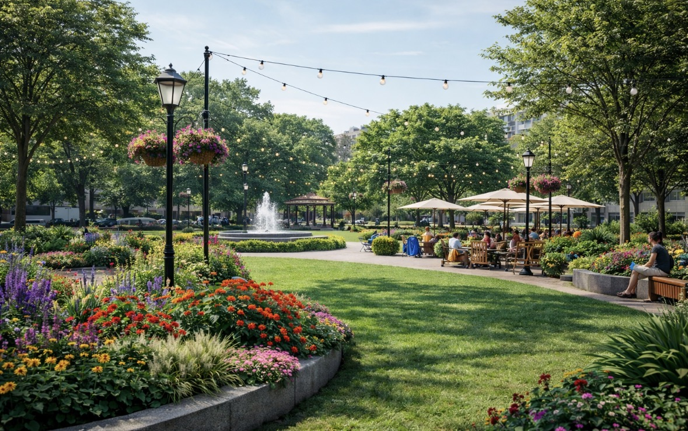

Comparing Possible
Design Directions
Before choosing a final redesign, I explored multiple possible directions for Montefiore Square. Each concept responded to the site in a different way and emphasized different priorities, including greenery, social activity, comfort, and identity. Comparing these ideas helped clarify which design choices would best serve the people who use the plaza every day. Instead of choosing a concept based only on appearance, I evaluated each one based on how well it addressed the problems identified in the research.

Concept 1: Greener Retreat
This concept focuses on stronger planting and a calmer landscape atmosphere. It makes the plaza feel softer, cooler, and more restorative, which would improve comfort and visual warmth. Its main weakness is that it may feel less flexible for gathering and everyday social use.
Concept 2: Social Plaza
This concept emphasizes seating, activity, and public interaction. It makes the plaza feel more energetic and community-oriented, which supports gathering and everyday use. However, if pushed too far, it could lose some of the calmness and shade that also matter in a neighborhood public space.
Concept 3: Balanced Final Direction
This concept combines the strongest parts of the earlier ideas. It keeps a green and welcoming atmosphere while also supporting flexibility, comfort, and social use. This balance makes it the strongest option for a plaza that needs to serve many different users.
Why This One Was Chosen
The final concept was selected because it does more than improve appearance. It responds to the site’s actual problems by improving shade, supporting seating variety, strengthening identity, and making the plaza more useful for commuters, students, families, and seniors.
What I Learned from Comparing Options
Looking at different design possibilities made it clear that a successful public-space redesign needs balance. A plaza cannot only be quiet and green, and it cannot only be active and social. It has to support multiple ways of using the space. This comparison process helped me understand that the strongest design is one that solves practical problems while also creating a more welcoming atmosphere.
Final Decision
I chose the final direction because it best matches the needs of Montefiore Square and the surrounding Hamilton Heights community. It improves daily comfort, gives the plaza a stronger identity, and makes the site feel more useful and memorable. Rather than focusing only on visual change, the final proposal focuses on how public design can improve everyday experience.